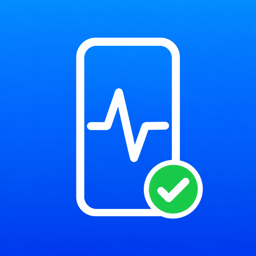

タッチ画面、カメラとフラッシュ、センサー、スピーカーとマイク、NFC、操作・音・振動を順番に確認し、結果をバーコードで表示します。診断データは端末の外に送信されません。App Clipでもすぐに診断できます。
Check the touch screen, cameras and flash, sensors, speakers and microphone, NFC, and interaction, sound and vibration, then show the results as a barcode. Diagnostic data never leaves the device. The App Clip lets you start right away.